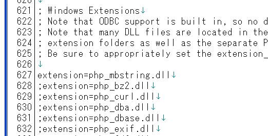
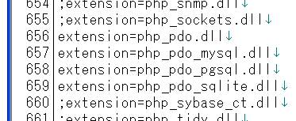
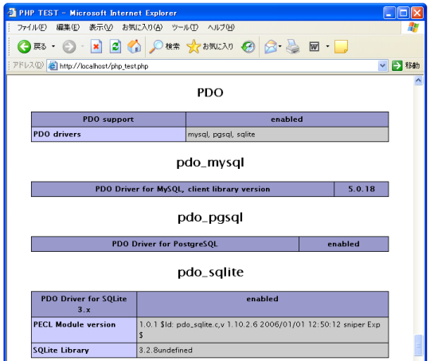

PHPの設定
Windows環境でPDOを利用する場合、まず「php.ini」への設定が必要となります。
「php.ini」をテキストエディタなどで開いて頂き、「Windows Extensions」と書かれた箇所を検索して下さい。620行目付近にあります。

ここは利用するDLLを設定する部分です。MySQLを利用する場合は「extension=php_mysql.dll」を、PostgreSQLを利用する場合は「extension=php_pgsql.dll」を追加で記述するか、又は既に記述されていた場合は先頭のセミコロン(;)を削除していました。
PDOを利用する場合はまず下記の1行が必要となります。
extension=php_pdo.dll
既に記述されていればそれで構いません。先頭にセミコロン(;)が付いていた場合はセミコロンを削除して下さい。もし記述が無ければ追加して記述しておきます。
次にPDO経由で利用するデータベース用のDLLについても設定します。各データベース毎にPDO用のDLLが用意されているため、こちらも記述しておきます。今回はデータベースとしてMySQL、PostgreSQL、SQLiteの3つを利用する予定ですので、まとめて記述しておきます。
extension=php_pdo_mysql.dll extension=php_pdo_pgsql.dll extension=php_pdo_sqlite.dll
結果的にphp.iniは下記のようになります。

※記述する位置はどこでもいいはずですが、各データベースのDLL用の記述よりも先に「extension=php_pdo.dll」を書いておいた方がいいかもしれません。
php.iniを書き換えたら一度Apacheを再起動しておきます。そしてphpinfo()を出力するサンプルページを実行してみます。

上記のように表示が出ていればO.K.です。
DLLファイルの確認
また必要となるファイルが存在していることを確認しておいて下さい。
「php_pdo.dll」「php_pdo_mysql.dll」「php_pdo_pgsql.dll」「php_pdo_sqlite.dll」の4つのファイルが拡張モジュールディレクトリ(エクステンションディレクトリ)に含まれている必要があります(私の環境の場合ですと、「d:¥php¥ext¥php_pdo.dll」のようになります)。
※拡張モジュールディレクトリの位置は、php.ini に記述が必要となります。『設定』を参照して下さい。
( Written by Tatsuo Ikura )

著者 / TATSUO IKURA
初心者～中級者の方を対象としたプログラミング方法や開発環境の構築の解説を行うサイトの運営を行っています。